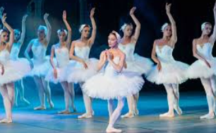
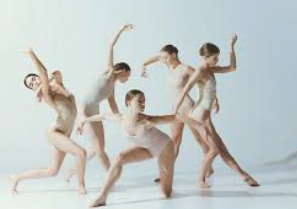
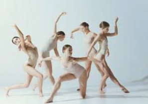
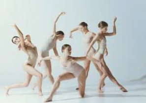
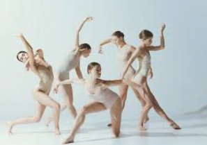

🎨 Dance Gallery

 



“Dance is the hidden language of the soul.” - Martha Graham
Dance is not just movement; it is an explosion of creativity, a way of expressing emotions, and a bridge between cultures. Across centuries and continents, dance has evolved as a universal language of joy and passion.
| Style | Description | Famous Dancers |
|---|---|---|
| Ballet | A graceful dance form that emphasizes precision and poise. | Misty Copeland, Rudolf Nureyev |
| Hip-Hop | A bold, freestyle dance born in the streets. | Michael Jackson, Les Twins |
| Contemporary | A fusion of ballet, modern, and jazz techniques with emotional expression. | Martha Graham, Travis Wall |
| Latin | Rhythmic, passionate styles like Salsa and Tango. | Derek Hough, Karina Smirnoff |

Sourced from Wikipedia - Dance.